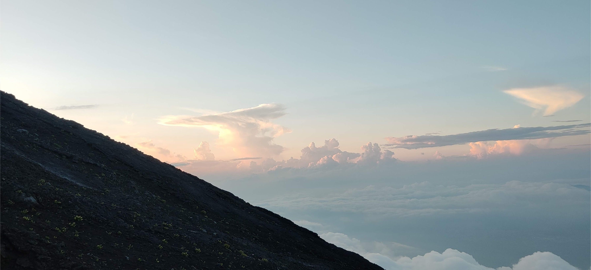
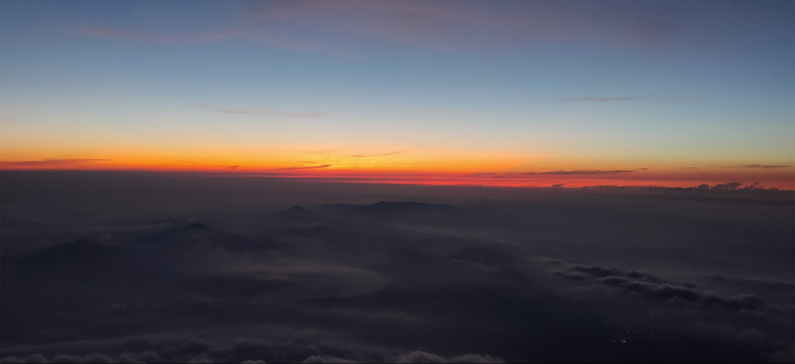

写在前面
2019年8月中旬时候人生第一次登顶了富士山，作为人生マイルストーン的事件，当时就决定要写篇博客作为记录。然而拖延症发作迟迟没有动手，后来就打算等今年再走不同的路线登顶后再写。结果今年由于疫情原因，官方也确定不开放登山了。今年再登顶的计划也就泡汤了，所以虽然迟到了快一年，但再不写可能就真的不会写了，所幸当时照片拍的还算多，还是可以边回忆边写下这篇记录的。
前期准备
富士山是日本第一高峰，肯定不能没有准备就贸贸然去攀登，自己当时也做了一页的功课，这里简单说说。
登山路线
富士山有四条登山路线，分别为：
- 吉田「よした」ルート
- 須走「すばしり」ルート
- 御殿場「ごてんば」ルート
- 富士宮「ふじのみや」ルート
登山难度的话大概是御殿場>須走=富士宮>吉田。
下面有一个令和元年的登山人数数据：
| | 吉田ルート | 須走ルート | 御殿場ルート | 富士宮ルート|
|—|—|—|—|—|
|登山者数（令和元年）| 149,969人 | 20,215人 | 12,230人 | 53,232人|
可以看出吉田线人数压倒性的多，不喜欢人多混杂的我肯定是选择绕开了，所以虽然没有爬过高山的经验，但出于对自己体能的自信，还是选择了人数较少的须走路线。
虽然后来我确实相对无压力地完成这次登山，但对于没有登山经验的人还是比较推荐走吉田，毕竟富士山不是完全没有风险的，人多的路线也相对较为安全。
物品准备
在装备上我很多参考了机核的这篇文章，虽然专业度不算高但对我个人还算OK了，就是Timberland的鞋子太重了，换成高帮的登山鞋会更合适。
别的路线不太清楚，但如果是走须走的话，一定要穿高帮鞋子，最好戴上鞋套，因为上下山很多路都是灰沙很大，不做防护的话可能半路就一鞋子沙了。
交通工具
网上有很多富士山的登山攻略，主要都是吉田路线的，其他路线的确实相对较少。不过日语资料还是比较丰富，我主要是通过富士さんぽ来做行程的，最后选择从新宿坐小田急到御殿場站，再转巴士可以直接到须走的登山口。
住宿
住宿方面，如果想要爬夜山看日出的话，还是很有必要预定山小屋的，选择直接在山上过夜的人也有很多，但如果天气不好比如下雨什么的就难受了，不太推荐这么做。我自己是花了7000多日元定了八合目半的一个山小屋，虽然没什么住宿体验（后面会讲），但好歹有个挡风的地方，不至于在山顶瑟瑟发抖。
有一点需要注意，每一条登山岛会路过的山小屋是不一样的，预定之前要查清楚是不是在自己的路线上。
登山过程
喜提队友（A小哥和B小姐）
8月10号一大早从新宿出发，大概中午就到了御殿場駅，出站就有巴士可以直接到须走口登山口，这让一开始担心迷路的我舒了一口气。
在巴士的时候遇上了一个在车上侃侃而谈的中国人小哥，装备比我齐全，看上去很有经验的样子。交谈了知道他是在日留学生（下文简称A小哥），年纪比我还小，倒是让我有些惊讶。跟他通行的还有一个女生（下文简称B小姐），一番寒暄后他邀请我同行，因为我是自己一个人去的，所以没什么包袱就愉快入队了，至此暂时结成了一个三人小队。
巴士大概不到一个小时就到了须走口五合目，这里其实已经是半山腰了，所以严格意义来讲我们算是从半山腰开始登山的。登山口有几家店买饮食和土特产，因为到的时间是中午，我们选择在那里吃了午饭，稍微准备一下才出发的。
出发前因为A小哥的建议我买了一双鞋套，这个在后来下山时候帮了我很多，虽然我穿的是高帮鞋，但下山时候的火山灰是在你头顶上面乱飘那种程度的。
五合目到七合目之间的富士山还是比较多树木的，而且刚登山的时候雾气很大，一度担心会不会下雨，路上零星会遇到一些登山的人，日本登山有他们的挨拶文化，大概就是每次路过的人都会互相打招呼，这个气氛我不知道走吉田会不会有？毕竟人流多的话每次都要打招呼也额外会花费不少体力吧？
小插曲：劝退
在六合目的时候还遇到一个欧美女人和两个中国男生的队伍，两个男生都穿日常休闲装，一开始没多想还以为是大学师生出来活动，后来搭话了知道他们也是临时组队的。
两个男生是刚高考完出来旅游的，因为旅馆在附近，下午没事觉得离富士山不远就直接过来爬山了。问他们打算的时候他们还说想要爬到山顶然后下山回去，当时听到了还是有点被惊到，毕竟什么装备都没带，连头灯手电筒都没有，两个高中生想要半天来回海拔三千多米的高山，怎么想很危险，当时又接近晚上了，于是一通好说歹说后，两个男孩也意识到不妥，乘着太阳还没下山就让他们回去了。
队友喜加一
之前遇到的两个队友里面，A小哥和B小姐是在知乎的登山群认识的，他们两个都不是第一次等富士山了，而且B小姐意外地体力特别好（后来才知道她是马拉松选手），A小哥体力倒是一般，所以后来基本都是B小姐远远在前面，我在中间，A小哥殿后。
A小哥是很健谈的人，在6.5合目的时候认识了一个单独爬山的C小哥，也是刚来日本的留学生。大概是A小哥很会搭话，到七合目的时候C小哥就顺利入队了。
先行
到七合目的时候有一个山小屋，而且刚好还有床位。队伍里面只有我自己是提前预定了山小屋了，因为担心后面没有山小屋可以住宿，所以剩下的队友都决定在这里休息到半夜再继续走，我便自己一个人继续前进了。
去爬富士山之前刚看了《天气之子》，刚巧爬山路上也看到了类似电影里面的雨云。
夏季的富士山远远看着黑秃秃的，但置身山上时候，随便远眺都是各种美景。

入夜
到八合目的时候已经是晚上七八点了，夜色变深，天气也渐渐变冷了。从七点五合目到八合目路上已经只有零星几个人，这时候已经需要戴上头灯才能看清路了。
从我这一面的山可以看到远处的城镇，当时是夏天，远处某个城市应该在举办花火大会。
第一次登夜山，中间有段路还几乎没人，还是蛮害怕的，好在没有下雨。
我到八点五合目预定的山小屋的时候差不多是8点多，当时工作人员已经准备收拾桌子了，我赶上他们厨房关门前点了一碗拉面，虽然后来在山顶发现也有卖拉面的，不过并没有去吃，所以山小屋点的这碗拉面就是我在日本最高处吃的拉面了。
山小屋
在山小屋外面的座椅陆陆续续会来一些登山者，他们都是没能预约上山小屋的，大部分都选择了在这里修整，不过因为山小屋不让没预定的人进里面，所以他们只能在外面坐着。
这里还是蛮庆幸自己提前预定到了山小屋，因为入夜后山上真的很冷，而且那天也是天气好没下雨，如果下雨的话我真的不知道他们在外面要怎么过。
山小屋的环境其实不怎么好，外面一个大堂，里面就是一个大房间，连厕所都要出去外面才有。
我在的那个房间大概就六七十平，分为了上下床，大概塞了两三百人（不确定），反正当时留给我的床铺的宽度十分狭窄，连翻身都是奢望。而且几百号人挤在一起，打呼的人也并不少，很不幸的当时我旁边睡着屋子里打呼最大声的一位，翻来覆去实在受不了，直接放弃睡眠去外面大堂坐着了。
然后这里我做了一个很错误的决定，因为在山小屋里面实在无聊，干瞪着眼睡不着，又不好发出声响免得吵到别人，然后到午夜12点过后，外面的登山者又陆陆续续往山上出发。
当时我睡不着，也就想着跟登山的部队一起往山上继续走段路，这里也不知道是幸运还是不幸。
后半夜
山小屋外面十分冷，而且我出山小屋后才发现头灯落在了里面（后来也没找回来），当时也确定了队友从七合目的山小屋出发，我就想着在外面等他们来了一起走。
当时大概等了一两个小时，因为山小屋回不去（走了一段距离），外面风大又很冷，所以大概是我这次爬山最难受的一段时间，到半夜两点时候开始发现情况不太对劲了。
须走线和吉田线在本八合目开始交汇，到了后半夜很多为了看日出的登山者都继续启程，山道也开始变得拥挤了。
我在大约不到九合目的地方开始发现前面的登山队伍开始移动得很缓慢，而此时我的队友发消息过来说他们还不到八合目（后面的拥挤也导致他们前进缓慢），此时离日出的预计时间（4点多）只剩一个多小时了，担心来不及山顶看日出，于是跟他们打了招呼，我便开始继续向山顶出发了。
日出
从九合目到山顶的路线移动特别缓慢，一方面是来自吉田路线的大量人流，另一方面也是登顶路线相对的狭窄陡峭。
我的运气还算好，在日出天际线出来的时候已经接近山顶的鸟居了，此时我后方还有大量人流，他们应该都只能在山路边看日出了。

到山顶的时候已经有很多人在了，日出的位置面向着河口湖，随着太阳升起，当时真的有一种在林克走出山洞初窥海拉尔的壮观的感觉。
富士山顶
看完日出，大概等了半个多小时我的队友才姗姗来迟，我们在山顶吃了些东西休整了一下，A小哥甚至还带了一些叉烧。
富士山的山顶还是很大的，上面有各种物产店，剑锋石碑，还有山顶邮局。而在中间有一个凹下去的大坑，在下面还有一个鸟居。
我们在A小哥的提议下去了山顶邮局，从这里寄出的明信片会有一个限定的富士山顶章（日本人对各种章的着迷还是让人蛮莫名的），我也跟着买了一组寄给国内的朋友，不过后来好像只有一半多的人收到了，也是遗憾。
下山
在山顶逛了一圈便决定下山了，下山时候跟队友商量了下，最终还是选择走须走下山，主要我们都觉得吉田线人太多了。
不过我们选择之前并没有事先了解好须走线的上下山路线区别，导致队友之一的C小哥后来脚受伤了。
走须走线上山的时候虽然也不轻松，但总体是山地的感觉，而下山的时候有很大的不同，因为有很长一段路都是柔软的沙路，而且个别沙道也一份陡峭，据说这也是富士山的名物，叫做“砂走り”。
所以基本上下山时候是滑着下来的，从感觉上来讲有点像双板滑雪，一开始有点害怕，但后来滑下来也是异常刺激。
刺激的活动也伴随着危险，全程沙走下来也很消耗体力，队友的C小哥就不幸脚受伤了，所以后来我们下山的行程比预计晚了不少，不过好在没有更危险的事发生。
大概在下午5点多抵达须走五合目，然后原路巴士和小田急就回东京了。原本想要下山后去泡个温泉，也因为没时间错过了，希望下次会有机会。
写在最后
写这篇文章时候日本新冠第二波正来势汹汹，除了不能出去浪多少有些残念之外，对于未来的生活也有感到一些不安。
这半年的世界局势变化之快，也让人深感个体面对时代洪流的无力。
不过哪怕处于历史转折点，生活也还是要继续，还是希望2021年能再次登顶富士山吧。